葛城流からくり綱火/茨城県水海道市
茨城県伊奈町にあるワープステーション江戸に行った時の話。
その一画にひっそりとあった郷土資料館の中のこんな展示に目が釘付け。
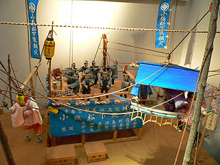 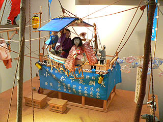
結界を張るがごとく綱が張り巡らされており、櫓にはお囃子、そして注目なのはその綱に人形や船が渡されているのだ。
これは伊奈町に伝わる綱火という祭だそうだ。
仕掛け花火の炎の中、綱をからくり人形が動きながら渡るという超ゴージャスな祭である。
何でも木に架かる蜘蛛の巣を見た人が思いついたという。
国の重要無形文化財にしていされているのもむべなるかな、である。
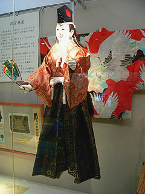
伊奈町には小張松下流綱火と高岡流綱火の2流派があり、それぞれ8月に綱火が執り行われるということだった。
珍妙で大仰なセットと空中からくり人形、しかも花火のオマケ付き。
見たい！見たい〜！！！！！
しかし、この展示を見たのが９月始め。綱火を見るのにはあと1年近く待たなければならない。
しか〜し！
常日頃、全国あまたの霊験あらたかな神社仏閣にて「もっと変な寺や変な祭に出会えますように、ひっひっひっひ・・・」と密かに祈願している私。
日頃の行いが功を奏して、珍寺の神様がチャンスを与えてくれた。
なんと近隣の水海道市で9月に綱火行事があるというのだ！
これを神仏の御加護といわずして何であろう。と、いう訳で岩井市の一言主神社に向かったのであった。
一言主神社はこの地域では有名な神社であり、一言だけ願いを叶えてくれる神社だそうだ。
その神社の例祭のメインイベントとして葛城流からくり綱火が奉納されるというのだ。
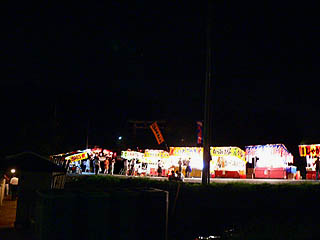 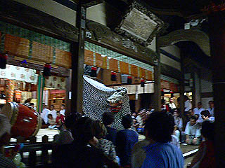
神社では早くもお祭りモード全開。駐車場では置き引き、スリに御注意ください、とアナウンスが流れる程の大きな祭のようだ。
神楽殿では獅子舞の奉納が行われており、徐々に綱火へのボルテージがあがっている。
本殿前には奇形の竹が飾られていて、良い感じ。
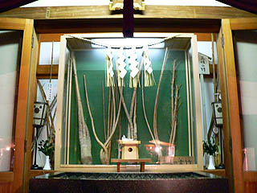
さて、そんなこんなで夜も更けてまいりますと、境内の一画の広場に大勢の人が集まりはじめる。
人々の視線の先の暗闇の中にはうっすらと柱に渡された綱が。おお、これが綱火のセットかあ。
綱火のセットはメインの櫓、そして10メートルはあろうかという数本の柱、そして派手な飾り櫓で構成されている。
それぞれの間に綱が張り巡らされており、その綱の間を人形が渡るのである。
ここ葛城流からくり綱火が始まったのは1659年。350年以上の歴史を誇るからくり芸で茨城県の文化財にも指定されている
操作はメインの櫓から。従ってかなりの遠隔操作になるため高い技術が必要となるのだ。
暫くするとアナウンスが始まり、いよいよいよいよ綱火奉納である。
始めは各スポンサーの名前が書かれた数十本の灯籠が火を吹く。
9月とはいえまだまだ暑い夜が一層ヒートアップしてくる。
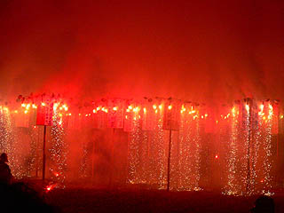 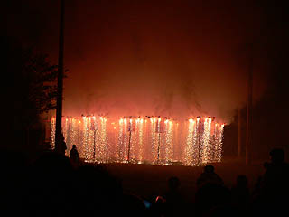
今まで真っ暗だった灯籠に一斉にナイアガラ系の火花が点火する様はとても美しかった。
火は段々ボルテージを上げ様々な色に変色していき、最後は灯籠自体を燃やし第一ラウンドは終了となる。
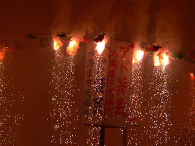
フムフム。中々良い感じじゃあないですか。露払いとしては上等である。
で、いよいよメインの綱火！なのだが・・・
・・・中々始まりません・・・
ギャラリー達もざわめき始めた。後ろにいた毎年来ているっぽい地元の方も「何だか今年は手際が悪かっペ〜」と仰ってました。
うん、だっぺだっぺ。
さらに待つ事十数分。いよいよ人形の綱渡りだ。
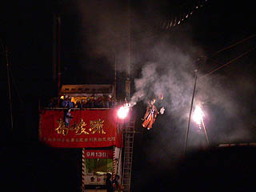
コドモ程の大きさのからくり人形が踊りながら綱を渡っていく。コントロールは赤い垂幕のある櫓の上で行われている。
途中、人形のそばから花火が放出。人形、焼けないのであろうか？
からくり人形渡りが無事終了すると、またまた中断。
後ろから「ああ〜ありゃ綱に引っ掛かっちゃったっぺ〜」との声。
真っ暗な中、またまた待つこと十数分、やっと再開した。確かにかなりてんてこ舞いな御様子。
今度は最終ステージ、弘法大師が大蛇と闘う話だそうで。
と、今まであまり目立たなかった飾り櫓がいきなり火を吹いて回転し始めた。今までの鬱憤を晴らすかのような暴れっぷり。お見事！
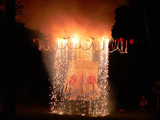
と、そこに10メートルはあろうかという大蛇登場。綱の間を行ったり来たり、それはもうダイナミックな暴れっぷり。しかもバックはナイアガラ系花火。
花火をバックに従え夜空にのたうちまわる大蛇は幻想的ですらあった。
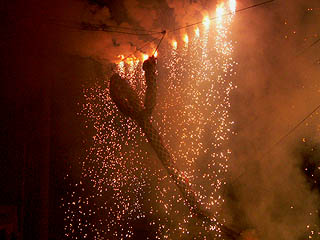 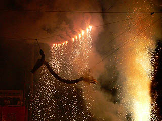
大蛇を見上げる保存会の皆さん。
途中、中断時間もあったが何とか最後の大蛇まで漕ぎ着けてホッとしているであろう。ご苦労様でした。
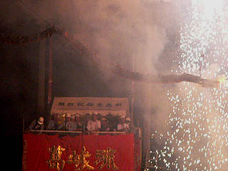
全体として若干手際に難があったようだが、綱火初体験の私としては満足であった。
全演目が終了した瞬間後ろから「今年はイマイチだったっぺ〜」と聞こえて来たのが気にかかるが・・・
この辺が国重文と県文の違いなんだろうか。
こりゃあ伊奈の綱火もチェックせねばなるまい。
2005.9.
珍寺大道場 HOME